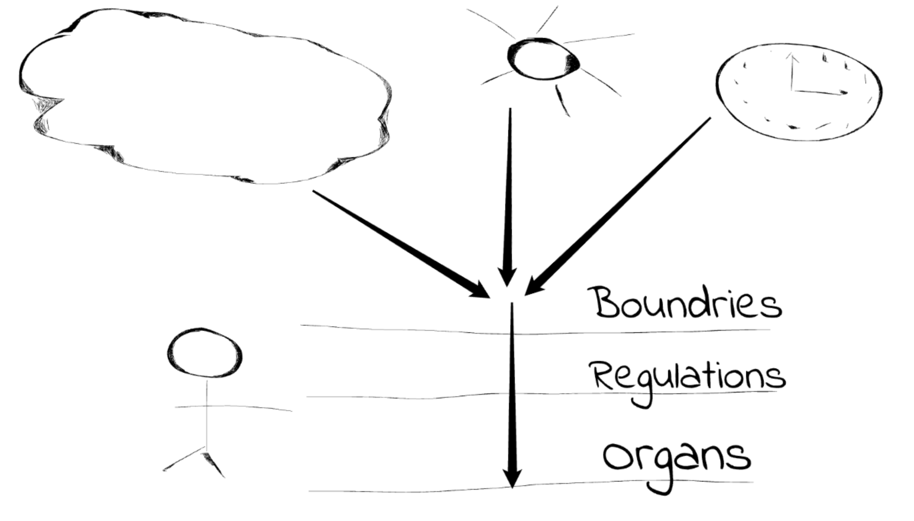
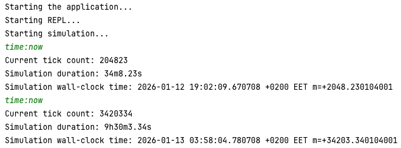

January 12, 2026
Human Body Simulation powered by FMesh
When building FMesh, I try to think not only as a framework author but also as a user. I built FMesh for myself in the first place, so experimenting with it is half the fun. By the way, I keep all my experiments public here: github.com/hovsep/fmesh-examples
The latest big example I built was a CAN bus simulation. While working on it, I learned a lot about microelectronics, which was a great experience. That project was not a pure simulation, but more of a simple implementation of the CAN bus protocol.
For my next project, I wanted something closer to a real simulation. Something more stochastic and less deterministic. So I decided to shoot for the moon and build a human body simulation.
I know that sounds crazy, and I know it's not possible to simulate the full complexity of the human body in software. Even simple life forms are only partially simulated, for example OpenWorm. But realism was never the goal.
My goals are:
- Push the framework and see if it actually makes life easier when building a complex dynamic system. By "dynamic" I don't just mean "not static." I mean systems with resources and flows.
- Learn human physiology. I've always been into biology, and this project is my chance to mess around with it in code (something I can't really do at work, but can as a hobby).
- Show how many simple components wired together can produce complex behavior. For example, if you lower the oxygen level in the air, you should see indirect reactions across the system: faster breathing, higher heart rate, rising adrenaline, and so on. The idea is that each component stays simple, but when you connect enough of them, you get a system where unexpected side effects and feedback loops start to appear.
Requirements
I imagine the final result like this:
- A REPL in the terminal that lets you inspect the simulation and, more importantly, change it by sending inputs.
- A time-step simulation with two main parts: the environment (habitat) and the organism (human body).
- A visual UI showing the main parameters like heartbeat, body temperature, mood, and so on.
- A time resolution of about 10 ms, which is good enough to model most physiological processes.
- A toy-like feel where you can feed the simulated human, change the ambient temperature, and watch how the body reacts.
Simplifications
To keep the project manageable, I made some big simplifications:
- The environment affects the human, but the human does not affect the environment. For example, we ignore CO₂ output.
- Ignore minor physiological factors such as gravity, acceleration, or ambient noise.
- Organs are the lowest level. No simulated tissues, cells, or molecules.
- We do not care about data accuracy. The heartbeat curve doesn't have to be realistic like in the McSharry ECG model with 17 parameters.
- Distributed anatomy is grouped. We don’t simulate every muscle or nerve; instead, similar tissues are combined into single components, like a unified muscular system.
Architecture
FMesh is just a graph of components. I could try to model everything as one huge graph from environment to human, but that quickly becomes messy - for example, you couldn’t have separate clocks for the environment and the human.
Instead, I split the simulation into two meshes: one for the habitat and one for the human. The human mesh is wrapped as a regular component and added to the habitat mesh.
Here's what that looks like in code:
This simulation mesh is then wrapped into step_sim, a small library that runs any mesh as a step-based simulation:
step_sim is basically a driver loop plus a REPL. You can pause and resume the simulation and control what happens at each step.
You can also add custom commands to send into your simulation mesh. Here are the ones I’m using so far:
Human Body Mesh
The more interesting part is the structure of the human body mesh.
At first, I tried a flat model where the human body was just a group of organs. That didn't work. We need different kinds of components, so I ended up with these layers:
- Boundary: interfaces between the environment and the body. For example, air doesn't flow directly into the lungs – it flows through the nose and air canals. We'll call it the Respiratory boundary.
- Controller: components that connect the body to REPL commands, so we can send intentions like eating, drinking, mental stress, or exercise to the human.
- Distributed anatomy: systems like skin, blood, muscles, etc.
- Organ: heart, brain, lungs, and so on.
- Physiology: endocrine system, autonomic nervous system, and similar things.
- Regulation: homeostasis and other mechanisms that keep important values within safe ranges (e.g., thermal regulation).
Sense-Regulate-Act
Splitting things into layers may sound unnecessary, but it maps well to a common robotics model called SPA: Sense-Plan-Act.
In physiology, SPA becomes SRA: Sense-Regulate-Act.
Every simulation step starts in the environment. A time tick arrives, the environmental factors update, and by the end of the habitat mesh run we know the state of the world for the next 10 ms. These signals flow into the human mesh, and the Sense phase begins. Boundary components read the environment, and controllers read user input. This phase updates the internal body state from the outside world.
Next comes the Regulation phase. Physiology and regulation run here. Hormones are released, chemical reactions advance, and control loops update.
Finally, we Act. Organs and distributed anatomy do their work. Blood, which acts as an information bus, has already been updated, so organs can just execute their logic. Oscillating organs like the heart and lungs advance their phase and update their internal state.
We may add one more phase to collect an aggregated body state so the UI can read everything from a single place. This part is still under discussion.
Performance
Right now, the simulation only has the general architecture in place, with 24 dummy components:
- Habitat: 3 components
- Human: 4 boundaries, 4 controllers, 5 physiology components, 1 regulation, 5 distributed anatomy components, and 2 organs (this will eventually grow to 10-15 organs) for a total of 21 components
Each simulation step runs both meshes and advances time by 10 ms. On my MacBook Pro 2023, the simulation currently runs at roughly 9.5 hours of simulated time per 1 minute of real time. This gives us a baseline to benchmark performance once the components are filled with actual behavior.
What's Next
This is where the human body simulation stands today. The architecture is in place and looks solid. Next up is filling in the actual physiology – time for me to finally learn a bit of anatomy while coding!
Source code: github.com/hovsep/fmesh-examples/tree/human_body_sim/life
Stay tuned for updates, and thanks for following FMesh!